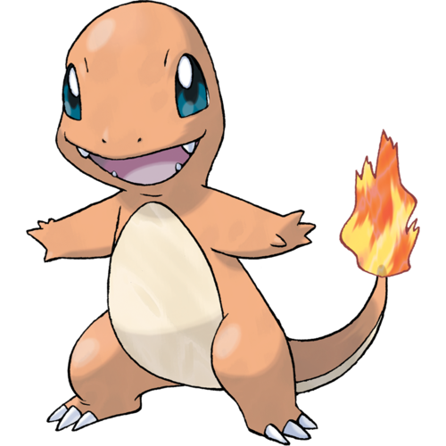

Charmander
 Charmander was mentioned in the first episode of the anime, Pokémon - I Choose You!, as one of the three starter Pokémon new Trainers in Pallet Town can choose from. Ash dreamed of owning one, although it was his last choice of a starter coming after Squirtle and Bulbasaur. However, when he arrived at Oak's lab, he found out it was too late, as another Trainer who started the same day had already taken it.
- A Charmander appeared in Pikachu's Vacation as one of the Pokémon seen at the Pokémon Theme Park.
- A Trainer's Charmander appeared in Friends to the End, during the closing ceremonies of the Indigo Plateau Conference.
- A Charmander appeared in the Japanese credits of Pikachu's Rescue Adventure.
- A starter Pokémon Charmander appeared in a flashback in Don't Touch That 'dile.
- A Charmander was used by one of the students of the Pokémon Trainers' School in Gonna Rule The School!.
- A Charmander appeared in Meloetta's Moonlight Serenade as one of the Pokémon watching Meloetta's concert.
Charmander (Japanese: ヒトカゲ Hitokage) is a Fire-type Pokémon introduced in Generation I. It evolves into Charmeleon starting at level 16, which evolves into Charizard starting at level 36. Along with Bulbasaur and Squirtle, Charmander is one of three starter Pokémon of Kanto available at the beginning of Pokémon Red, Green, Blue, FireRed, and LeafGreen.